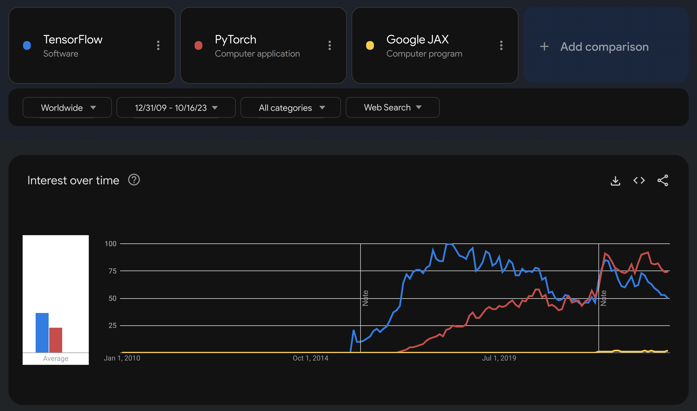

Why JAX?
There are many excellent and popular deep learning frameworks already (e.g. PyTorch). So why did Google—already behind the successful TensorFlow project—start developing JAX?
In this section, we will look at the advantages brought by JAX—namely speed and flexible automatic differentiation.
What is JAX?
JAX is a library for Python developed by Google. Its key data structure is the array. It can perform composition, transformation, and differentiation of numerical programs as well as compilation for CPUs, GPUs, and TPUs.
It comes with a NumPy-like API as well as a lower-level API called lax. While the NumPy-like API looks familiar to NumPy users, JAX requires strict functional programming (i.e. functions should only depend on their inputs and should only return outputs).
A relatively new project
It is clear that JAX is not a widely adopted project yet.
Trends of Google searches

JAX is fast
JAX was built with performance in mind. Its speed relies on design decisions at all levels.
Default data type
Like PyTorch—a popular deep learning library—JAX uses float32 as its default data type. This level of precision is perfectly suitable for deep learning and increases efficiency (by contrast, NumPy defaults to float64).
-
JIT compilation combines computations, avoids the allocation of memory to temporary objects, and more generally optimizes code for the XLA.
Accelerators
The same code can run on CPUs or on accelerators (GPUs and TPUs).
XLA optimization
XLA (Accelerated Linear Algebra) is a domain-specific compiler for linear algebra that takes JIT-compiled JAX programs and optimizes them for the available hardware (CPUs, GPUs, or TPUs).
Asynchronous dispatch
Computations are executed on the accelerators asynchronously.
Vectorization, data parallelism, and sharding
All levels of shared and distributed memory parallelism are supported in JAX.
Flexible differentiation
Automatic differentiation (autodiff or AD) is the evaluation by computer programs of the partial derivatives of functions. It is a key part of deep learning since training a model mostly consists of updating its weights and biases to decrease some loss function and this is done thanks to various gradient-based optimizations.
Several implementations have been developed by different teams over time. This post by Chris Rackauckas summarizes the trade-offs of the various strategies.
Removing Julia (which by the way has a lot to offer in the field of AD) and PyTorch’s stale attempt at JIT compilation, Chris Rackauckas’ post can be summarized this way:
TensorFlow’s initial approach with static computational graphs in a domain-specific language—while efficient thanks to the intermediate representation (IR) and XLA—was inconvenient, limited, and hard to debug. Mostly, users had to write the IR themselves.
PyTorch came with dynamic graphs—an approach so much more convenient that it marked the beginning of the decline of TensorFlow. The operations are stored during the forward pass which allows for easy automatic differentiation. However this “per value” AD does not allow for a lot of optimizations.
TensorFlow2 tried to bring dynamic graphs, but it was a poor match for the XLA.
This leaves room for new strategies. Julia offers several promising approaches, but implementations are not straightforward and projects are not always mature. It is an exciting avenue for developers, not necessarily an easy one for end users.
JAX is another attempt at bringing both optimization and flexibility to autodiff. With Google behind it, it is a new but fast growing project.